The Crowded-field problem
To solve the ‘‘crowded field problem,’’ i.e., analysis of a dense local distribution of molecules which can not be adequately resolved by one of the methods described above, ThunderSTORM uses a multiple-emitter fitting method similar to the algorithm described in [2]. This algorithm can use any of the PSF fitting algorithms, including the 3D approach, described above. First, users need to specify the maximum number of molecules allowed in one fitting region 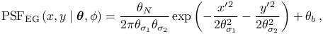. Next, the algorithm fits a single molecule in the image, then subtracts the fitted molecule from the image and finds the maximum in the residual image which is taken as the approximate position of a second molecule. The algorithm then fits two molecules to the imaged spot. This routine is repeated until it reaches a model with molecules. Because a model with 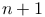 parameters will fit at least as well as a model with 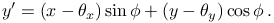 parameters, we must determine whether the extra parameters are statistically justified.
When using least-squares methods, we use a model selection criteria based on an 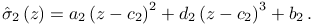 test [1]
| 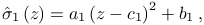 | (1) |
where 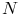 is the number of pixels in the sub-region and 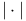 is the total number of fitted parameters for each model. The model with molecules is accepted if the calculated value of 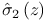is greater than 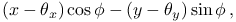 at a user-specified p-value.
When using maximum-likelihood estimation, we use another model selection criteria based on the log-likelihood ratio
| 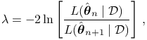 | (2) |
where and 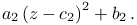 and 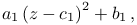 are the estimated set of parameters for and molecules respectively. When the number of measurements is large, the log-likelihood ratio approximates a chi-square distribution. The model with molecules is accepted if the calculated value of 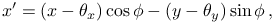 is greater than 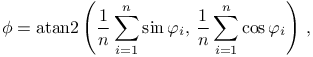at a user-specified p-value.
(!!p-value is probability or p=1-confidence level, is calculated by apache or looked up in a table)
Users can constrain the multiple-emitter fitting algorithm so that all the molecules have the same intensity. In our hands, this was necessary to ensure stability of the fit.
.
see Motulsky2003, p. 141
References
- [1] (2003) Data reduction and error analysis for the physical science, McGraw-Hill Higher Education, McGraw-Hill. External Links: ISBN 9780072472271. Cited by: The Crowded-field problem.
- [2] (2011-01) Simultaneous multiple-emitter fitting for single molecule super-resolution imaging, Biomedical optics express 2 (5), pp. 1377–93. External Links: Document, ISSN 2156-7085. Cited by: The Crowded-field problem.
![[LOGO]]()